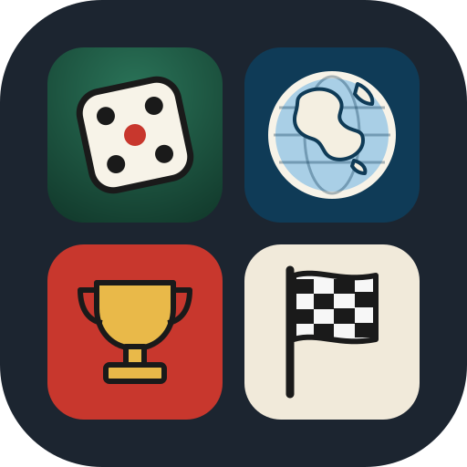

DesDés
Nos carnets de jeux de dés, un quiz de géographie, une course à dessiner et la neige de culture.
Choisir un jeu
D'autres jeux arriveront ici. Chaque partie est gardée sur cet appareil : vous pouvez quitter un jeu et y revenir plus tard.